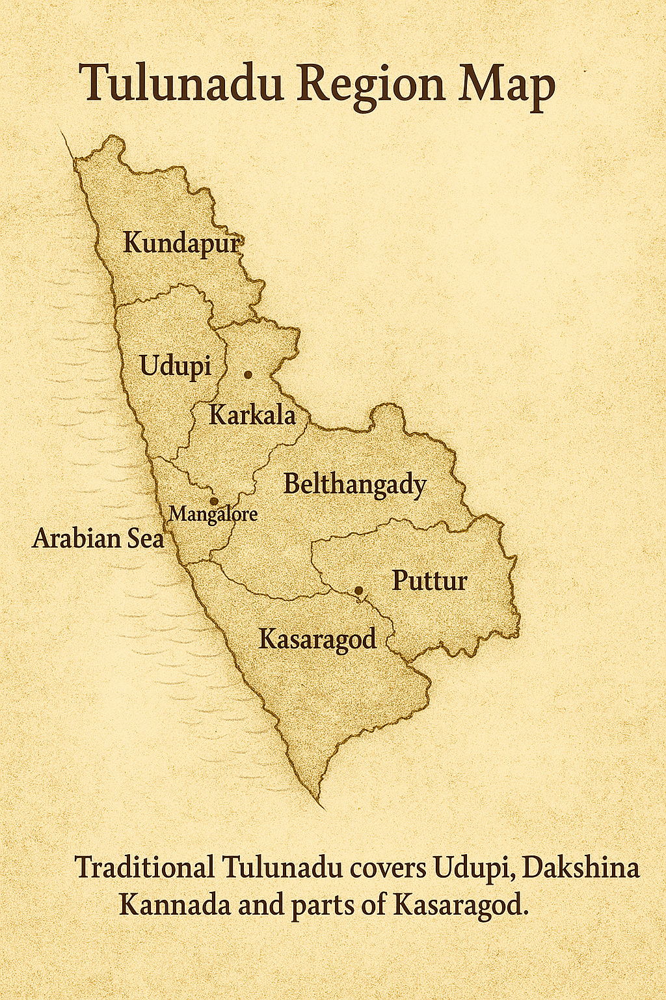

1. Introduction to Tulunadu
Tulunadu (Tulu Nadu) is a historic coastal region on the southwestern coast of India, today covering Dakshina Kannada, Udupi and parts of Kasaragod. Bordered by the Arabian Sea to the west and the Western Ghats to the east, it has remained a culturally unique land for over two thousand years.
Tulunadu is known for its Tulu language, powerful folk traditions, spectacular Yakshagana performances, Kambala buffalo races, sacred Bhoota Kola rituals, ancient temples, cuisine, and a strong maritime and trading heritage.
2. Geographic Origin and Early Identity
The name “Tulu Nadu” comes from the people who speak the Tulu language. Ancient inscriptions and texts refer to this region as Alvakheda, Mudalnadu and parts as Kolathunadu. Its natural boundaries – sea on one side and dense hills on the other – helped protect and preserve its distinct customs, rituals, and language.
The region’s rivers – Netravati, Gurupura, Swarna, Sita and others – nourished fertile lands, making rice, coconut and arecanut cultivation central to life in Tulunadu.
Tulunadu Region Map
Traditional Tulunadu covers Udupi, Dakshina Kannada and parts of Kasaragod.
 View Full Map on Google Maps3. Early Inhabitants and Pre-Historic Roots
Archaeological evidence from megalithic burial sites, pottery, coins and tools suggests that Tulunadu was inhabited from the Stone and Iron Ages. Various indigenous communities such as Bunts, Billavas, Mogaveeras, Poojari communities and others have deep roots in this land.
The people of Tulunadu developed strong agrarian systems, marine trade and unique spiritual practices long before formal kingdoms appeared.
4. Alupa Dynasty (c. 200 – 1400 CE)
The Alupa dynasty is central to Tulunadu’s recorded history. They ruled the region for nearly 1200 years, making them one of the longest-ruling dynasties in South India. Their capitals included Mangaluru, Barkuru, and Udyavara at different periods.
The Alupas had their own coinage, naval forces and trade routes. They encouraged temple building, marine trade and early forms of Yakshagana and Daiva worship. Many Shaiva, Shakta and Jain temples and basadis grew under their patronage.
They maintained political independence while maintaining respectful ties with larger empires like the Chalukyas, Rashtrakutas and Hoysalas. Strong coastal defenses, fertile lands and maritime trade helped them remain stable for centuries.
5. Jain Influence in Tulunadu
Tulunadu was once a major centre of Jainism. Jain basadis and monuments can be seen at Barkuru, Moodabidri, Karkala and many other places. The famous Thousand Pillar Basadi in Moodabidri and the Gomateshwara statue at Karkala stand as proof of Jain artistic and spiritual influence.
Many Alupa and local chieftains supported Jain scholars, architecture, and education. Jainism contributed richly to Tulunadu’s art, literature and administrative ethics.
6. Tulu Language and Ancient Script
Tulu is one of the oldest Dravidian languages, with a spoken history believed to be older than many modern regional languages. A unique Tulu script, influenced by Grantha and early Malayalam scripts, was used historically in temple records, Bhoota Kola texts, and spiritual works.
Ancient Tulu works include local versions of Mahabharata, Devi Mahatme and other spiritual texts. The language continues to thrive today in conversations, cinema, theatre and folklore, and there is a growing movement to get Tulu recognised in the Eighth Schedule of the Indian Constitution.
7. Daiva Aradhane and Bhoota Kola
One of Tulunadu’s most unique spiritual traditions is Daiva Aradhane – worship of divine spirits known as Daivas. This is expressed dramatically through Bhoota Kola, an ancient ritual that combines trance, dance, music and deep faith.
The performer, after elaborate costumes and preparations, enters a trance and is believed to become the Daiva. People then seek justice, blessings and solutions to problems. The Daivas such as Panjurli, Guliga, Jumadi, Kodamanithaya and Koti–Chennaya are considered protectors of the land.
Bhoota Kola is not just a ritual; it is an oral archive of history, law, and social ethics in Tulunadu, preserved through songs known as Paaddanas.
8. Yakshagana – Theatre of the Soil
Yakshagana is a vibrant dance-theatre form that evolved in Tulunadu over a thousand years. It combines music, dance, dialogue, costume, and epic storytelling, often performed in open-air stages throughout the night.
There are two main styles:
Badagu Thittu – Northern style with heavy crowns and elaborate costumes.
Tenku Thittu – Southern style with more natural makeup and acrobatic movement.
Stories from the Mahabharata, Ramayana, Puranas and local legends are brought alive with energy, humour and devotion. Yakshagana is one of the strongest cultural symbols of Tulunadu.
9. Kambala – The Buffalo Race of Tulunadu
Kambala is a traditional buffalo race held in water-filled paddy fields. It began as a way to thank the gods for protecting crops and later evolved into a major sporting and cultural event.
Farmers decorate their prized buffaloes and race them on parallel muddy tracks. The sound of drums, cheering crowds and the sight of speeding buffaloes through water make Kambala a thrilling spectacle that has now gained recognition across India and the world.
10. Medieval Tulunadu: Vijayanagara and Keladi Nayakas
After the Alupa dynasty faded, Tulunadu came under the influence of the Vijayanagara Empire. The region became an important coastal defence and trade zone. Temples, forts and towns grew in importance during this period.
Later, the Keladi (Ikkeri) Nayakas took control of the region. They repaired forts, supported temples, allowed Arab traders to operate, and maintained law and order. Rulers like Shivappa Nayaka are remembered for agrarian reforms and governance.
11. European Entry, Tippu Sultan and Mysore Rule
From the 16th century onwards, Portuguese and other European traders began to visit the west coast, including Tulunadu. They introduced new trading systems, architecture, churches and schools, but also faced resistance from local rulers.
In the late 18th century, Tippu Sultan of Mysore took control of Tulunadu after the decline of the Keladi Nayakas. Under his rule, ports and roads developed further and spice trade expanded. However, this period also saw religious tensions and wars with the British.
Tippu’s death in 1799 ended Mysore control over Tulunadu and paved the way for full British rule.
12. British Era: South Canara District
Under the British, Tulunadu was reorganized as the South Canara district. They developed:
- Mangalore port and harbour
- Railway lines connecting to major cities
- Missionary schools and colleges
- Tile factories and cashew processing industry
- Banking institutions like Syndicate Bank & Corporation Bank
English education and missionary activity made Mangaluru and Udupi region an educational hub, while traditional culture continued strongly in rural areas.
13. Post-Independence and Modern Tulunadu
After India’s independence in 1947, South Canara became part of Mysore State (later Karnataka). Over time, the region was reorganized into Dakshina Kannada and Udupi districts. Parts of historic Tulunadu, such as Kasaragod, became part of Kerala.
The region today is known for:
- High literacy and educational institutions
- Strong banking and commercial history
- Information technology and startups
- Coastal tourism and beautiful beaches
- Deeply rooted traditions that still thrive
Tulunadu successfully balances modern growth with ancient cultural heritage.
14. Koti–Chennaya: Legendary Heroes of Tulunadu
Among all the legends of Tulunadu, the story of Koti and Chennaya shines the brightest. They are celebrated as twin warrior-heroes who stood for justice, equality and protection of the poor, and are today worshipped as Daivas across Tulunadu.
Birth and Early Life
The legend begins with Deyi Baidyethi of Padumale, a woman known for her purity, strength and healing abilities. Through divine blessing, she gave birth to twin sons, Koti and Chennaya, believed to be children of the Sun God. Though society questioned her, her character remained unquestioned, and the twins were raised with strong values of honesty and bravery.
Growing up in hardship, the twins worked in fields, trained in wrestling, and became protectors of villagers. Deyi Baidyethi’s teachings – to always stand by Dharma and never accept injustice – shaped their destiny.
Rise as Warriors
As young men, Koti and Chennaya participated in local wrestling competitions and defeated all strong challengers. Their fame reached the local ruler, who invited them into his service. They became palace warriors and guards, admired for their strength and fairness.
However, their growing popularity created jealousy among certain nobles and ministers in the royal court, especially a man named Kinnidajja, who began plotting against them.
The Struggle for Justice
One day, a poor farmer approached the twins, complaining of injustice by a powerful landlord named Arasethimmaya. The landlord was seizing land, exploiting workers and abusing power. Koti and Chennaya decided to stand by the oppressed villagers.
They confronted the landlord, defeated his men and restored the land to the rightful farmers. This heroic act won them the love of the people, but also made powerful enemies in the court.
Betrayal and Final Battle
Kinnidajja poisoned the king’s mind, claiming that the twins wanted to overthrow him. Misled and suspicious, the king turned against Koti and Chennaya. Soldiers were sent to capture them.
Refusing to surrender to injustice, the twins chose to fight. A fierce battle broke out in the forests of Tulunadu. Outnumbered, Koti and Chennaya fought bravely till their last breath, standing side by side as true brothers and warriors of Dharma.
Finally, through betrayal and overwhelming force, they were martyred. Their death created a wave of grief and anger among the people of Tulunadu.
From Warriors to Divine Protectors
After their death, the Daivas and people of the land recognized that Koti and Chennaya were not ordinary humans. Their courage, sacrifice and sense of justice made them eternal protectors of Tulunadu.
They were elevated to the status of Daivas, and Garadis (shrines) dedicated to Koti–Chennaya were established across Tulunadu – especially in Kumbla, Manjeshwar and many other places.
Today, Koti–Chennaya are worshipped with great devotion. Their story is sung in Paaddanas, performed in Bhoota Kola rituals and remembered as the symbol of:
- Bravery and courage
- Justice for the weak
- Brotherhood and loyalty
- Resistance to oppression
- Protection of Dharma
For the people of Tulunadu, Koti–Chennaya are not just legends, but living guardians and the soul of Tulu identity.
15. Timeline of Tulunadu
- 2000 BCE – Early settlements and megalithic culture in coastal region.
- 300 BCE – 200 CE – Mentions in early literature and coastal trade records.
- 200 – 1400 CE – Alupa Dynasty rules Tulunadu.
- 7th century – Arab traders visit and trade with Tulunadu ports.
- 10th – 14th century – Strong Jain influence, basadis and temples flourish.
- 15th – 16th century – Vijayanagara rule; forts and temples strengthened.
- 16th – 18th century – Keladi Nayakas; continued coastal importance.
- Late 18th century – Tippu Sultan’s rule and conflicts with British.
- 1799 – British rule begins; region named South Canara.
- 1947 – India’s independence; South Canara becomes part of Mysore/Karnataka.
- 1997 – Udupi district formed; Tulunadu identity grows stronger.
- Present – Tulunadu as a vibrant region of culture, education and heritage.
16. Tulunadu Today and Tomorrow
Tulunadu today stands as a unique blend of ancient culture and modern progress. Its temples, rituals, festivals and heroes like Koti–Chennaya keep the spirit of the land alive, while its schools, colleges, businesses and technology centres shape its future.
As long as its people continue to respect their roots – language, rituals, heroes and history – Tulunadu will remain a land of pride, courage and living heritage.